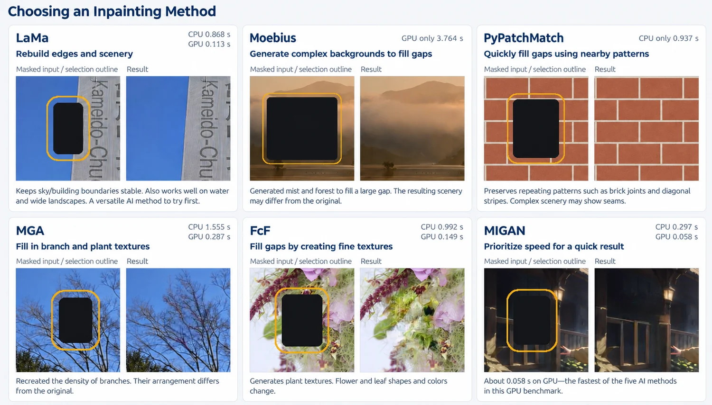
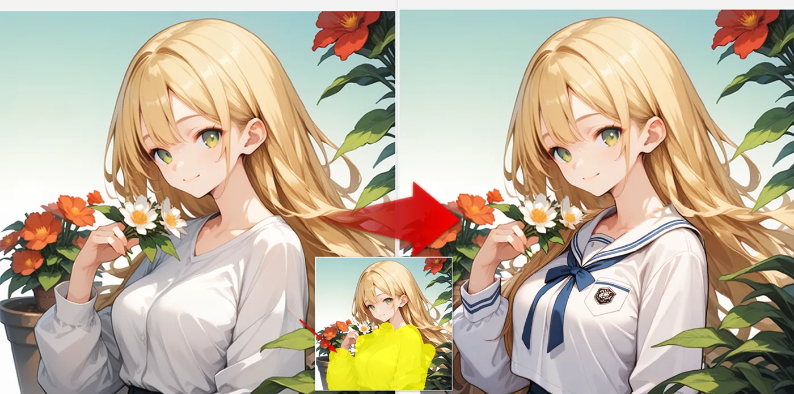
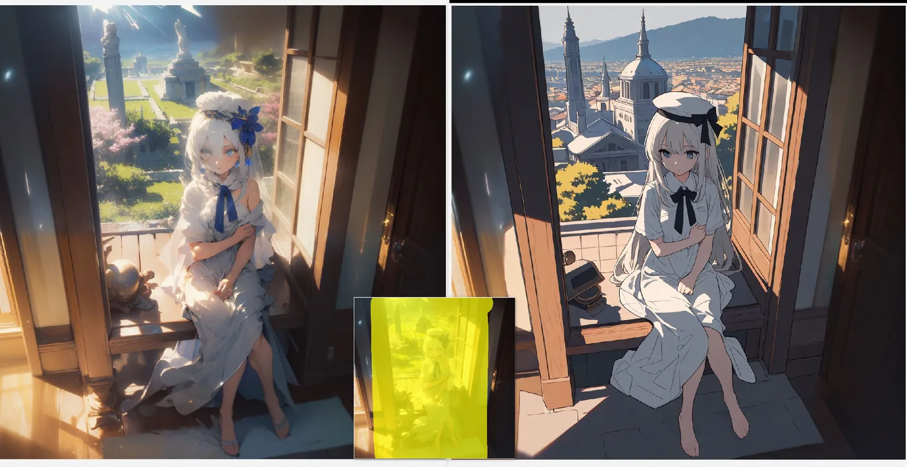
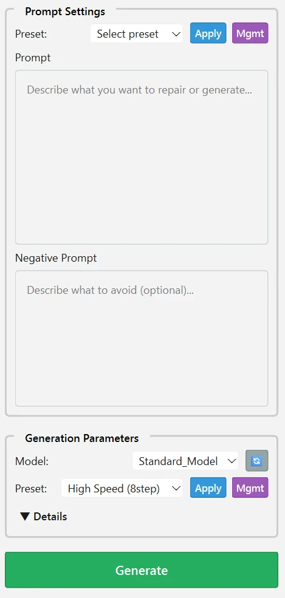
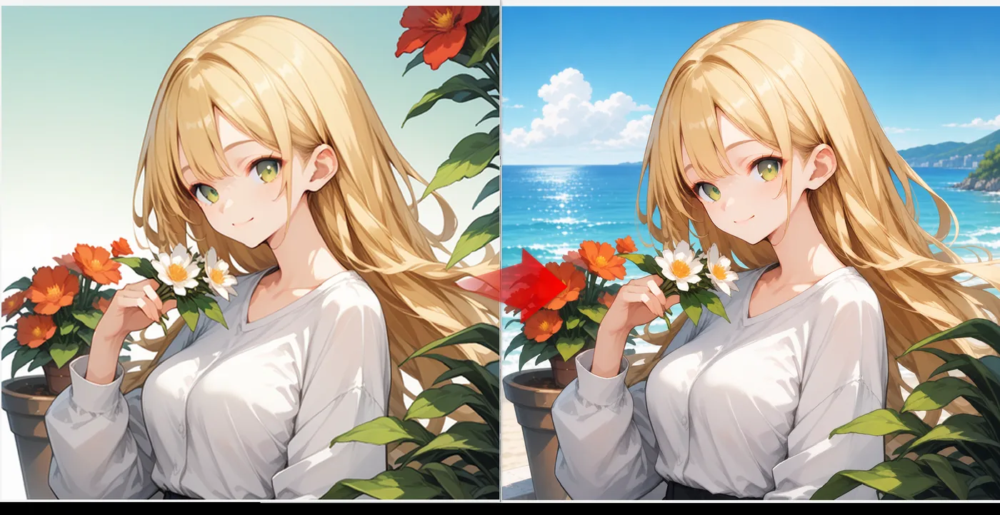
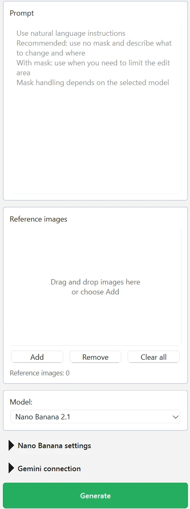
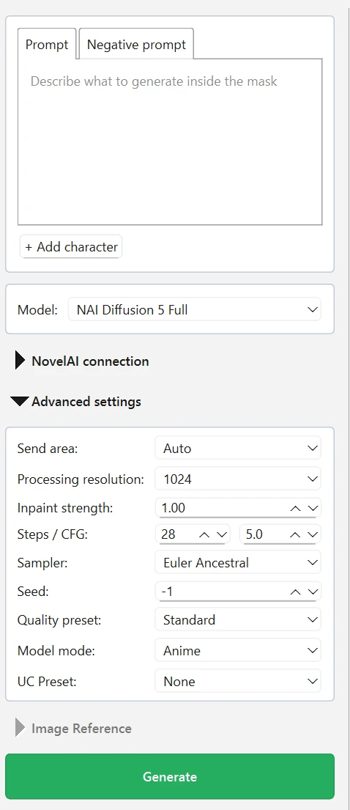
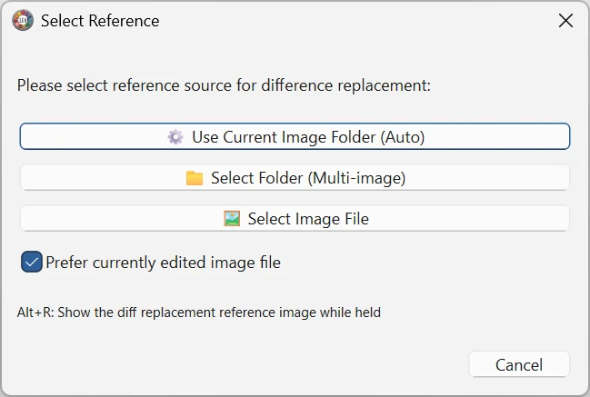

Inpainting
Applies processing to the area you paint with the mask. Which category you use depends on whether you want to erase (Repair/Remove), redraw (Inpaint) or restore (Diff Replace).
Toolbar
| 1Mask tool | Left-drag to paint the area, right-drag to erase. Shift+wheel over the mask grows / shrinks it. |
| 2AI auto mask | When on, Shift+left click lets the AI pick the object as a mask (Shift+right click to exclude). |
| 3Category | Repair/Remove / Inpaint / Diff Replace / Other (Ctrl+↑↓). |
| 4Model | Model within the category (Ctrl+Shift+↑↓). Direct keys can be assigned to favorite models in Settings. |
| 5Size | Mask brush size (right click + wheel). |
| 6Run | Processes the masked area (Enter / double-click). |
| 7Clear mask | Clears all painted masks. |
Choosing a category and model
Repair/RemoveNo prompt, a few seconds
Erases unwanted objects by blending them with the surroundings. If the result isn't good, try another model.
- Remove (LaMa)
- Large areas: buildings, signs, sky and horizon
- Remove (MIGAN)
- Fastest. Complex backgrounds and fine detail
- Remove (MGA)
- Textures such as plants, clouds, water, fabric
- Remove (FcF)
- Patterns like wallpaper or floors, straight structures
- Repair (PatchMatch)
- Fills from similar nearby patterns. Small objects, thin scratches
- Repair (OpenCV Telea)
- Fast non-AI repair. Small scratches, dust, thin lines
- Completion (Moebius)
- Generates background to fill. People and complex backgrounds (NVIDIA GPU required, ~1 GB first download)
InpaintRedraw with a prompt
Set the prompt and reference images in the left sidebar.
- Advanced Inpaint (SDXL)
- Redraws according to the prompt. GPU required, about 10–60 s
- Reference Inpaint (SDXL)
- Redraws while keeping the composition and style of the original (or a reference image)
- NovelAI Inpaint
- Redraws the masked area with NovelAI (NovelAI subscription required)
- GPT/Gemini Inpaint
- Edit with natural language. Without a mask, the whole image is edited
Diff ReplaceRestore
Restores pixels from the same position in a reference image. Ideal when the original image still exists.
- DiffReplacement
- Remove unwanted AutoMosaic mosaics, partially undo edits, etc.
OtherHelper processing
- BGRemove (Part)
- Background removal for the masked area only (uses the background removal settings)
- Mosaic
- Mosaic for the masked area only (uses the mosaic tool settings)
- Eraser
- Makes the masked area transparent (white for formats without transparency)
Repair/Remove model comparison

Advanced / Reference Inpaint (SDXL) examples

Roughly paint the area, enter a prompt, and it is redrawn.

Without a reference image, the original image itself is used as the reference.
Advanced / Reference Inpaint settings

1234567| 1Preset | Save and apply prompt combinations. |
| 2Prompt | What you want to draw. Japanese or English both work. |
| 3Negative prompt | What you want to avoid (optional). |
| 4Model | The SDXL model to use. |
| 5Generation preset | Small / Medium / Big_Change set how strongly to rewrite; High Speed (4step / 8step) sets speed. |
| 6Details | Denoising strength, prompt adherence and more. The presets are usually enough. |
| 7Generate | Runs generation on the masked area. |
Turn on "Import image generation info into inpaint prompts" in Settings to pre-fill the prompt from the opened image. Reference Inpaint also lets you choose a reference image and mask preprocessing (original / fill / latent noise).
GPT/Gemini Inpaint example

External services (GPT / Gemini) settings

123456| 1Prompt | Describe the change in natural language (Japanese also works). |
| 2Reference images | Drag & drop or click Add to send extra images along with the current one. |
| 3Model | Gemini: Nano Banana 2.1 / 2 Lite / Pro. GPT: gpt-image models. |
| 4Generation settings | Gemini: output resolution and thinking level. GPT: quality, size and transparency handling. |
| 5Connection | Enter and save your API key (stored encrypted for this Windows user). Links to API key setup and usage / billing are also here. |
| 6Generate | Sends the image to the service for editing. |
GPT / Gemini are billed per use; NovelAI's Anlas usage depends on your plan and generation settings. Images are sent to the provider's servers.
NovelAI Inpaint example

NovelAI Inpaint settings

1234567| 1Prompt / Negative prompt | What to draw in the masked area, and what to avoid. |
| 2Add character | Lets you give each character its own prompt. |
| 3Model | The NovelAI model to use. |
| 4NovelAI connection | Enter and save your NovelAI API key (persistent token). |
| 5Advanced settings | Send area, processing resolution, inpaint strength, Steps / CFG, sampler, seed and more. The defaults are usually fine. |
| 6Image Reference | Sets a reference image. |
| 7Generate | Redraws the masked area with NovelAI. |
NovelAI Inpaint requires a mask and redraws only the masked area. A NovelAI subscription is required; Anlas usage depends on your plan and generation settings.
Diff replacement
Restores pixels from the same position in a reference image (the image before mosaic, or before editing). Only the area painted with the mask is restored.
How to remove unwanted AutoMosaic mosaics is explained on the Mosaic page.
Diff replacement reference

12345| 1Select reference | Ctrl+R opens this dialog. |
| 2Use current image folder (Auto) | To restore the current image to its state before editing. |
| 3Select folder | Automatically finds an image with the same or a similar name in a folder of originals, such as AutoMosaic's input folder. |
| 4Select image file | To use one specific image as the reference. |
| 5Prefer currently edited image file | If the reference folder is the current folder, the saved current file is used first. |
If the AutoMosaic log is in the same folder, the original image is set automatically. Hold Alt+R to show the reference image on the canvas and confirm it's the right one.
Mask handling
- Choose what happens to the mask after processing with "Inpaint mask after processing" in Settings: Clear after processing / Keep after processing / Restore only on Undo.
- The AI auto mask model (SAM2.1) and mask growing / hole filling can be adjusted under Settings > Processing.
- Turn on "Keep the inpaint settings sidebar open" to keep the sidebar open when switching models.